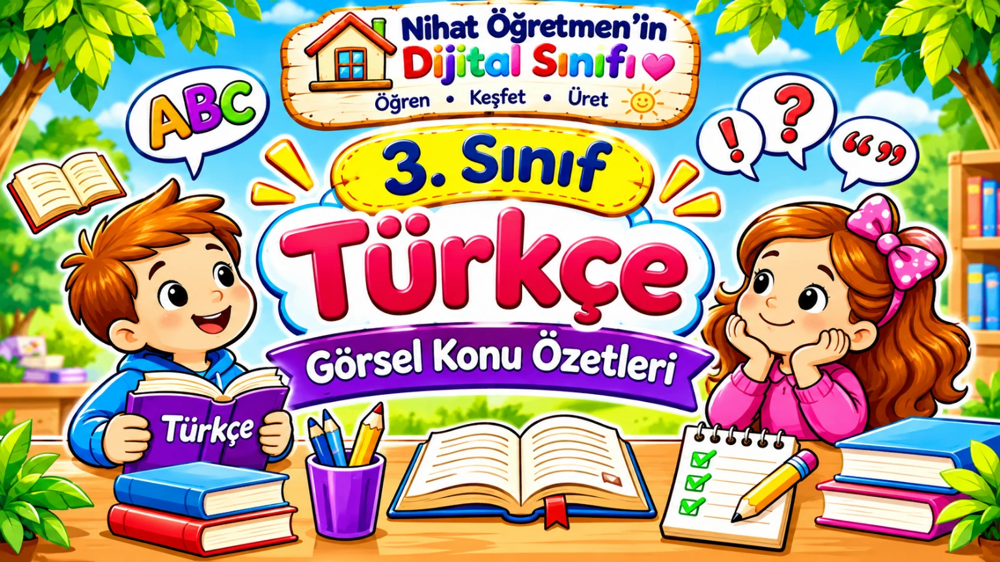

Türkçe Konu Özeti

Nihat Öğretmenin Dijital Sınıfı · Konu seçimi, görsel önizleme, akıllı tahta ve A4 baskı
💡 Kendi görselinizi telefonunuzdan veya bilgisayarınızdan seçip hemen ekranda anlatabilir, A4 olarak yazdırabilirsiniz. Görseliniz siteye kaydedilmez.